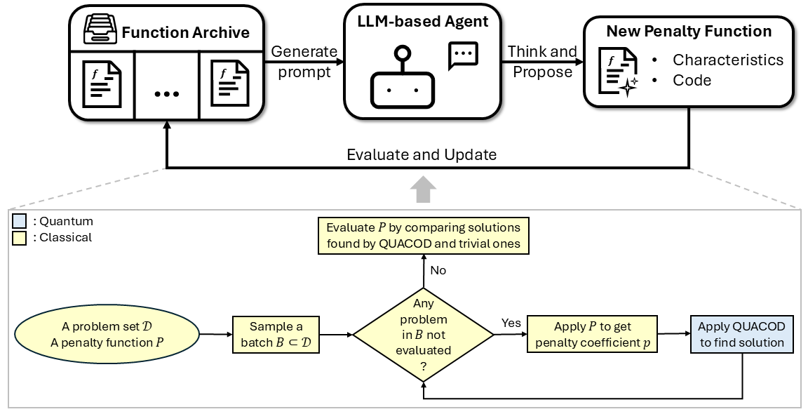
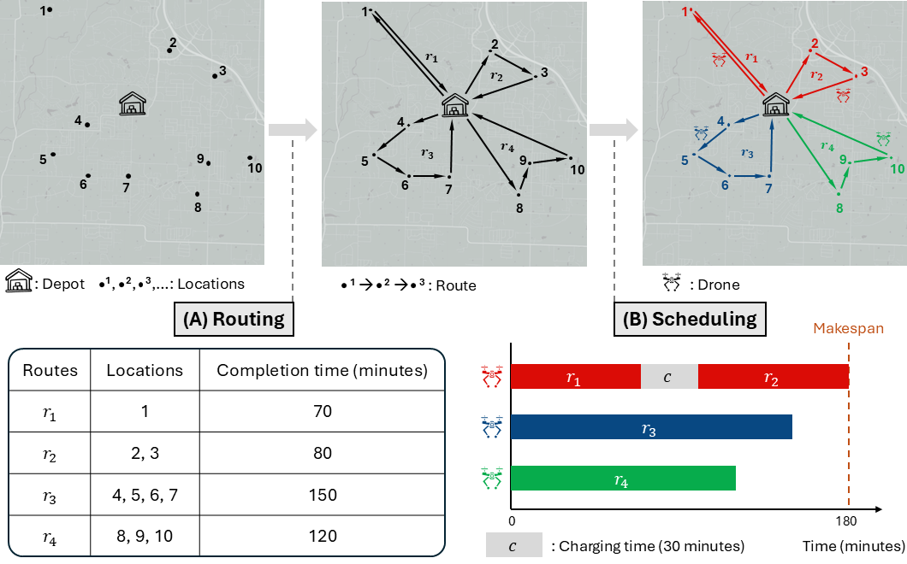
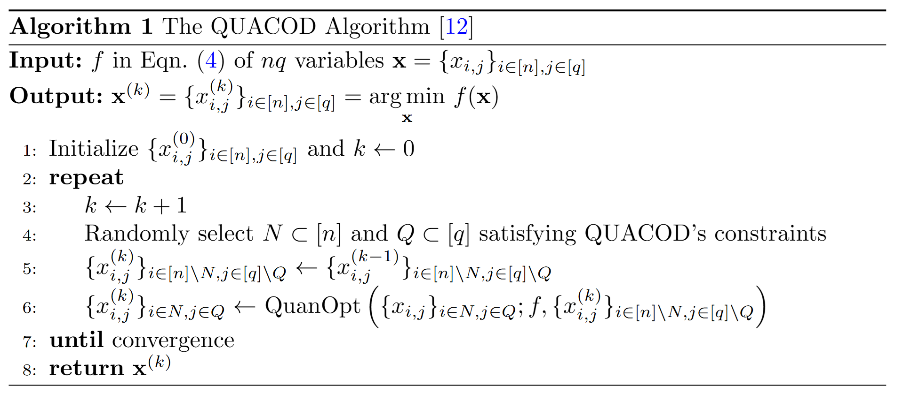
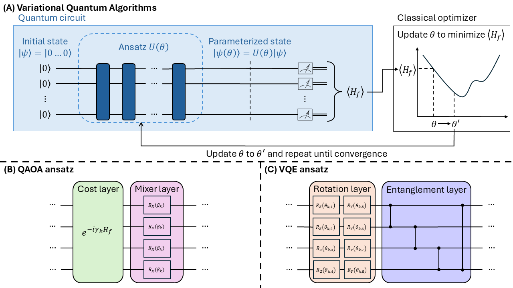
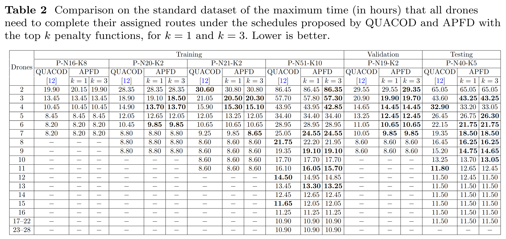
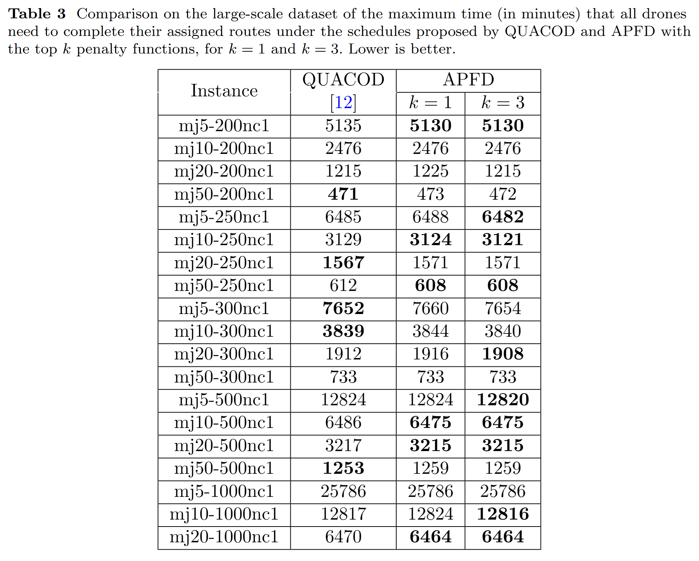

Quantum computing has emerged as a potential tool for solving combinatorial optimization problems, such as drone scheduling. Quantum methods typically transform the problem into a quadratic unconstrained binary optimization (QUBO) form before solving. However, a notable limitation of this transformation is its requirement that there are no constraints, which drone scheduling and many other problems do not naturally satisfy. A common workaround is to embed the constraints in the objective function via penalty terms, thereby yielding an equivalent unconstrained problem. The remaining challenge is that the appropriate penalty coefficient varies significantly from one problem to another.
To determine it, we propose an agentic framework in which LLM-based agents automatically discover and design penalty functions for drone scheduling. The agents iteratively propose, evaluate, and refine them in response to solver feedback, reducing reliance on manual tuning.
The experimental results show that the agentic method improves the solution on up to 36 cases while degrading only 11, demonstrating that agentic design is a viable alternative to manual tuning.


Quantum Optimization via Coordinate Descent (QUACOD), as shown in Algorithm 1, is inspired by coordinate descent. Specifically, instead of solving the problem over all routes and drones at once, QUACOD decomposes it into multiple subproblems. Each subproblem is defined over randomly selected subsets of routes and drones that satisfy certain constraints and is then solved by a quantum optimization method, denoted by QuanOpt. Variational quantum algorithms (VQAs), including QAOA and VQE, are one class of methods that can be used for QuanOpt.



Khoa Luu, Xuan Bac Nguyen, Hugh Churchill. Automatically detecting false negative objects in 2d material detection data sets. US Patent App. 18/443,058, 2024.
Van-Quang-Huy Nguyen, Hoang-Quan Nguyen, Samee U. Khan, Ilya Safro, Khoa Luu. QUACOD: Quantum Optimization via Coordinate Descent for Scalable Drone Scheduling. IEEE Quantum Week Conference, 2026.
Hoang-Quan Nguyen, Xuan-Bac Nguyen, Hugh Churchill, Arabinda Kumar Choudhary, Pawan Sinha, Samee U. Khan, Khoa Luu. Quantum-Brain: Quantum-Inspired Neural Network Approach to Vision-Brain Understanding. arXiv preprint, 2025.
Hoang-Quan Nguyen, Xuan Bac Nguyen, Sankalp Pandey, Tim Faltermeier, Nicholas Borys, Hugh Churchill, Khoa Luu. ϕ-Adapt: A Physics-Informed Adaptation Learning Approach to 2D Quantum Material Discovery. arXiv preprint, 2025.
James B. Holliday, Eneko Osaba, Khoa Luu. An Advanced Hybrid Quantum Tabu Search Approach to Vehicle Routing Problems. Journal of Quantum Machine Intelligence, 2026.
James B. Holliday, Darren Blount, Eneko Osaba, Khoa Luu. Advanced Quantum Annealing Approach to Vehicle Routing Problems with Time Windows. arXiv preprint, 2025.
Hoang-Quan Nguyen, Xuan-Bac Nguyen, Sankalp Pandey, Samee U. Khan, Ilya Safro, Khoa Luu. QMoE: A Quantum Mixture of Experts Framework for Scalable Quantum Neural Networks. IEEE Quantum Week Workshop, 2025.
Xuan Bac Nguyen, Benjamin Thompson, Hugh Churchill, Khoa Luu, Samee U. Khan. Quantum Vision Clustering. Discover Internet of Things, Springer, 2025.
James B. Holliday, Darren Blount, Hoang-Quan Nguyen, Samee U. Khan, Khoa Luu. QUADRO: A Hybrid Quantum Optimization Framework for Drone Delivery. IEEE Quantum Week Conference, 2025.
Sankalp Pandey, Xuan Bac Nguyen, Nicholas Borys, Hugh Churchill, Khoa Luu. CLIFF: Continual Learning for Incremental Flake Features in 2D Material Identification. NeurIPS Workshop, 2025.
Hoang-Quan Nguyen, Xuan Bac Nguyen, Samuel Yen-Chi Chen, Hugh Churchill, Nicholas Borys, Samee U. Khan, Khoa Luu. Diffusion-Inspired Quantum Noise Mitigation in Parameterized Quantum Circuits. Journal of Quantum Machine Intelligence, 2025.
Xuan Bac Nguyen, Hoang-Quan Nguyen, Hugh Churchill, Samee U. Khan, Khoa Luu. Hierarchical Quantum Control Gates for Functional MRI Understanding. IEEE Workshop on Signal Processing Systems (SiPS), 2024.
Xuan Bac Nguyen, Hoang-Quan Nguyen, Hugh Churchill, Samee U. Khan, Khoa Luu. Quantum Visual Feature Encoding Revisited. Journal of Quantum Machine Intelligence, 2024.
Xuan Bac Nguyen, Hoang-Quan Nguyen, Samuel Yen-Chi Chen, Samee U. Khan, Hugh Churchill, Khoa Luu. QClusformer: A Quantum Transformer-based Framework for Unsupervised Visual Clustering. IEEE Quantum Week Workshop, 2024.
James B. Holliday, B. Morgan, Hugh Churchill, Khoa Luu. Hybrid Quantum Tabu Search for Solving the Vehicle Routing Problem. IEEE Quantum Week Workshop, 2024.
Xuan Bac Nguyen, A. Bisht, B. Thompson, Hugh Churchill, Khoa Luu, Samee U. Khan. Two-dimensional quantum material identification via self-attention and soft-labeling in deep learning. IEEE Access, Vol. 12, 2024.
@article{nguyen2026quacod,
title={QUACOD: Quantum Optimization via Coordinate Descent for Scalable Drone Scheduling},
author={Nguyen, Van-Quang-Huy and Nguyen, Hoang-Quan and Khan, Samee U and Safro, Ilya and Luu, Khoa},
journal={arXiv preprint arXiv:2605.14001},
year={2026}
}